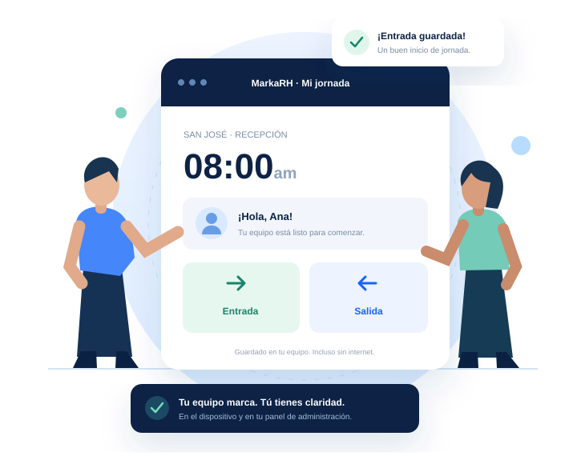

01
Marcar, sin complicaciones.
Nombre, PIN y listo. El registro queda en el equipo, incluso sin internet.
Registra la jornada en tu empresa, incluso sin internet. Revisa tu equipo y sus horarios desde un solo lugar.

Así se verá tu experiencia · Vista ilustrativaTres cosas que vas a sentir desde la primera jornada.
Nombre, PIN y listo. El registro queda en el equipo, incluso sin internet.
Personas, sucursales y horarios. Cada quien en su lugar, sin hojas sueltas.
Ve qué llegó, qué falta y qué revisar. Las correcciones conservan su historia.
El empleado usa el marcador. Tú organizas todo desde la web.
Planes ilustrativos para evaluar la experiencia. Precios por cotizar.
Tu primer paso hacia el orden.
Conecta más personas y lugares.
Para operaciones con más alcance.
Una experiencia sencilla, con los límites claros desde el inicio.
La futura app instalada conservará las marcaciones en el equipo autorizado y las sincronizará al reconectarse. Este prototipo permite simular el flujo con almacenamiento del navegador.
No. Los empleados marcan exclusivamente en el equipo instalado. La web está reservada a administradores y al Maestro.
La fotografía será opcional. La identificación por huella requiere un lector externo y SDK compatibles, probados en cada plataforma. No están implementados en esta demo.
Los reportes apoyan la revisión administrativa. Las reglas laborales y las estimaciones de pago necesitan validación profesional; no sustituyen una planilla legal.
Cuéntanos sobre tu equipo. Te ayudamos a encontrar tu plan.